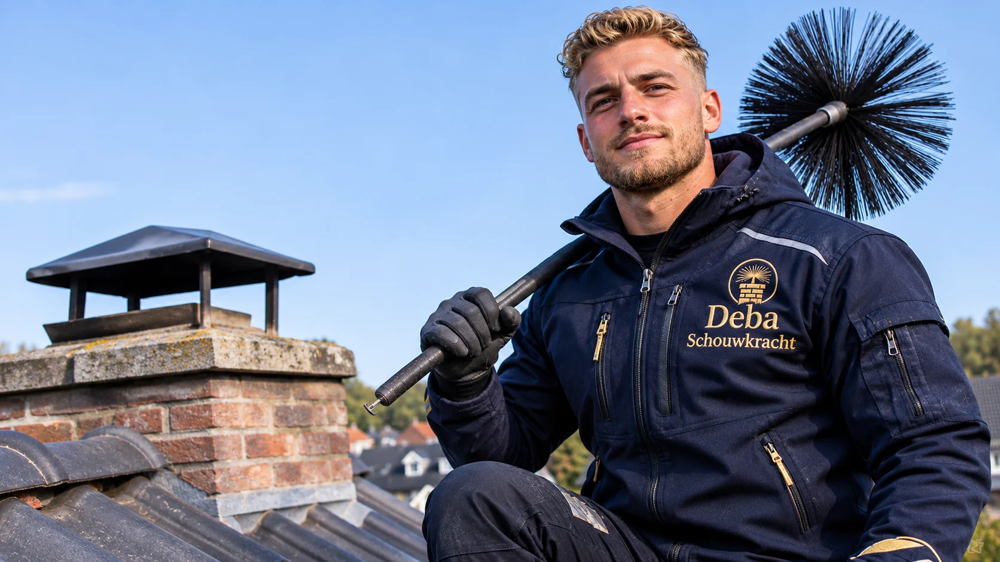
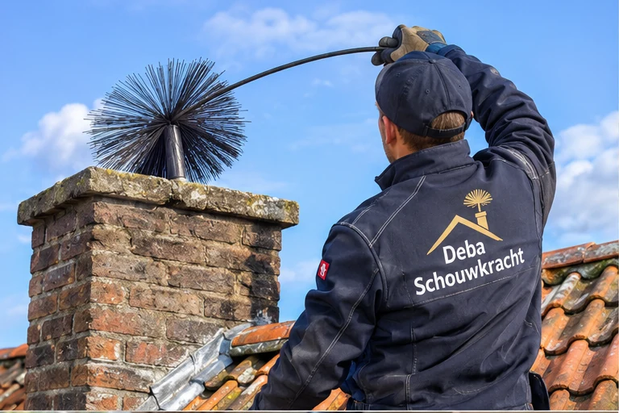
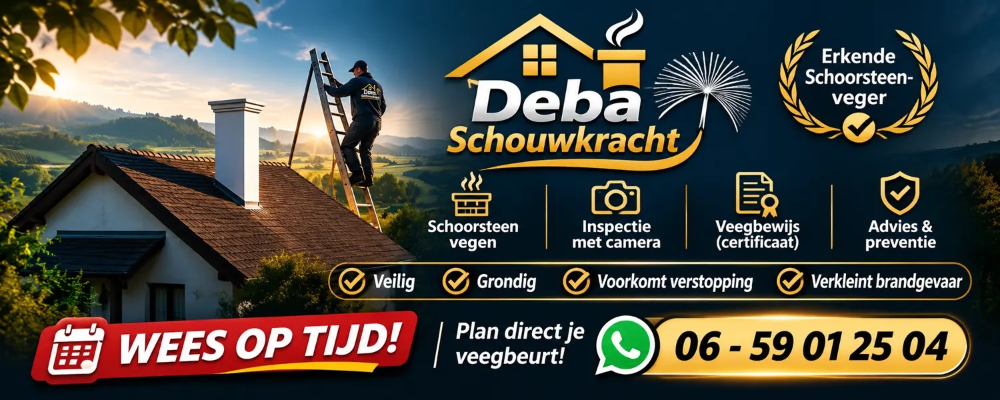
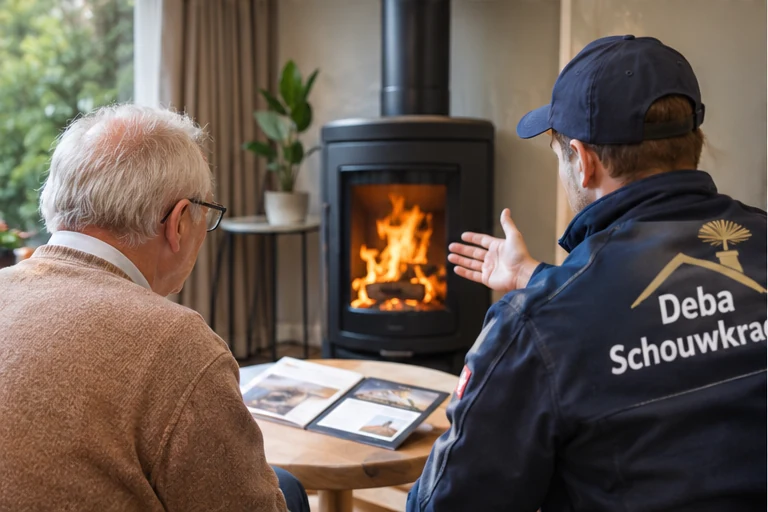
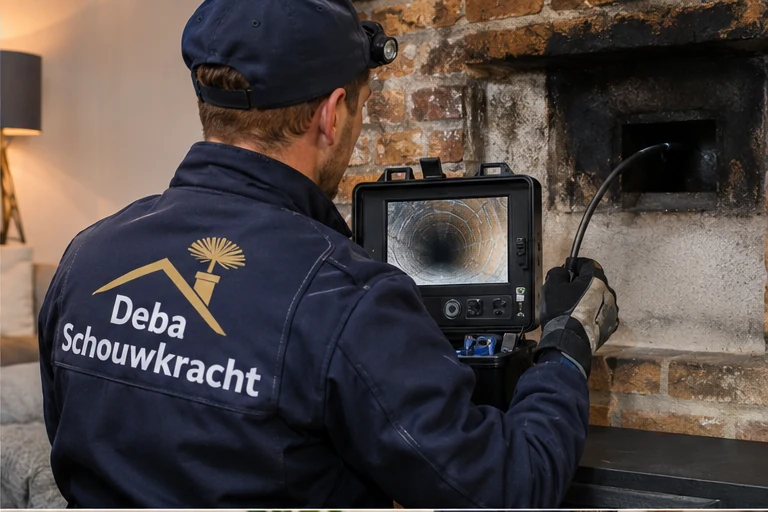

Schoorsteenveger in Nederland.
Een gerust gevoel.
Uw schoorsteen professioneel laten vegen? Deba Schouwkracht verzorgt schoorsteenvegen inclusief veegbewijs. Vanuit Noord-Brabant bieden wij onze diensten door heel Nederland aan. Heldere prijzen, persoonlijk contact en eenvoudig een afspraak via WhatsApp.
Meer over schoorsteenvegen →
Alle genoemde prijzen zijn inclusief btw en standaard voorrijkosten. Voor vanafprijzen hangt de totaalprijs af van de werkzaamheden. Eventuele bijzondere omstandigheden of extra werkzaamheden bespreken we vooraf.
Onze diensten voor uw woning
Van schoorsteenvegen en camera-inspecties tot dakgootreiniging en zonnepanelen reinigen. Kies hieronder de gewenste dienst.

Schoorsteen & kachels
Schoorsteenvegen, inspectie en veilig stoken

Dak & gevel
Dakgoten, dakkapellen en onderhoud

Reiniging & ventilatie
Zonnepanelen en reinigingswerk
Goed onderhoud begint met één bericht.
Een schoorsteen die regelmatig wordt onderhouden helpt risico's te beperken. Wij bespreken uw situatie, geven vooraf duidelijkheid over de prijs en plannen samen een geschikt moment.
Vraag een afspraak aan ↗
Schoorsteenveger in heel Nederland
Deba Schouwkracht is gevestigd in Noord-Brabant en biedt schoorsteenvegen en woningonderhoud aan klanten door heel Nederland.
Wij helpen klanten onder andere in Eindhoven, Helmond, Tilburg, Breda, 's-Hertogenbosch, Nijmegen, Arnhem, Utrecht, Rotterdam, Den Haag en Amsterdam.
Wilt u uw schoorsteen laten vegen of heeft u onderhoud nodig? Stuur ons uw postcode en gewenste werkzaamheden. Wij bespreken de mogelijkheden en plannen samen een afspraak.
Controleer beschikbaarheid ↗Goed om te weten
Wat kost schoorsteenvegen bij Deba Schouwkracht?
Schoorsteenvegen inclusief veegbewijs kost € 74,50, inclusief btw en standaard voorrijkosten. Bij bijzondere omstandigheden of meerwerk bespreken wij de kosten vooraf.
Is € 74,50 inclusief veegbewijs?
Ja, schoorsteenvegen inclusief veegbewijs kost € 74,50.
Zijn de prijzen inclusief btw en voorrijkosten?
Ja. De genoemde prijzen zijn inclusief btw en standaard voorrijkosten. Bij afwijkende omstandigheden of meerwerk bespreken wij de totale kosten vooraf.
In welke regio's is Deba Schouwkracht actief?
Wij zijn gevestigd in Noord-Brabant en bieden onze diensten door heel Nederland aan. Neem contact op met uw postcode om de mogelijkheden te bespreken.
Hoe vraag ik een afspraak aan?
Stuur een WhatsApp-bericht met uw postcode en de gewenste dienst. Wij bespreken vervolgens de mogelijkheden.
Waarom is schoorsteenonderhoud belangrijk?
Regelmatig onderhoud helpt ophoping van roet en andere vervuiling te beperken. Dit kan bijdragen aan veiliger gebruik van uw schoorsteen en rookkanaal.
Plan uw onderhoud eenvoudig.
Vertel ons welke dienst u nodig heeft en vermeld uw postcode. Wij helpen u graag verder.